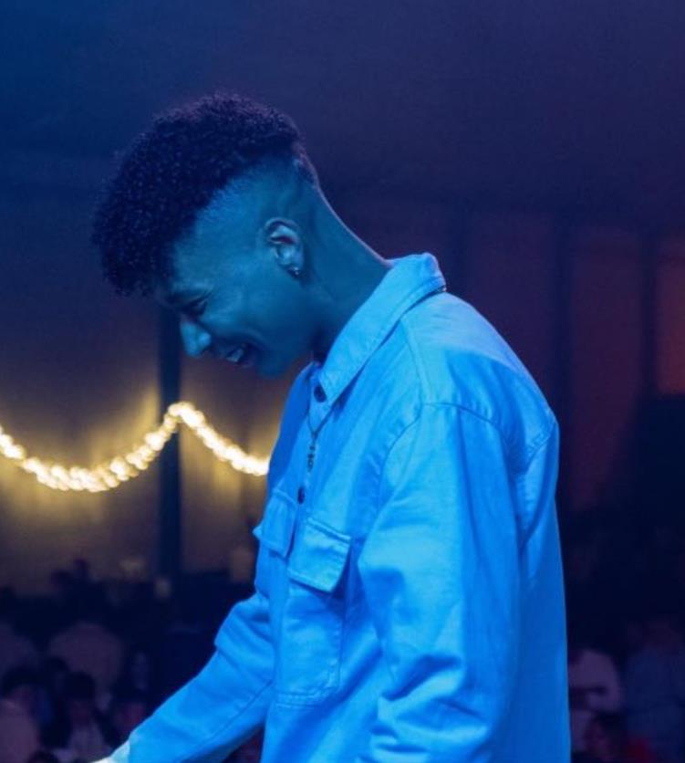

De empezar a rapear con los amigos de toda la vida en el parque del pueblo, a llenar recintos y expandir su manera de entender la música cada vez por más rincones. Así ha sido el camino de JAP.
¿De dónde nace tu pasión por la música? ¿Cuándo te diste cuenta de que era a lo que te querías dedicar?
Mi pasión por la música nació cuando tenía 15 años. Empecé a hacer freestyle y batallas de gallos con mis amigos ahí en el parque y fue donde empezó todo, prácticamente. Me di cuenta de que era a lo que me quería dedicar cuando saqué mi primera canción. Fue como una sensación muy diferente a todo lo que había experimentado antes, la verdad.
¿Cómo es tu proceso de composición? ¿En qué te inspiras para crear nuevas letras?
Pues es muy gracioso, a la vez que muy eficaz, porque yo lo que hago es que me pongo una instrumental y me pongo a tararear. Tarareo todo lo que son las melodías, el flow… Y ya, a partir de ese tarareo, aplico la letra. Así lo hago.
En relación a lo segundo, sobre todo me inspiro en el día a día, en cosas que me pasan, sentimientos, momentos… En prácticamente todo lo que me pasa a mí.
¿Cómo describirías tu estilo musical y su evolución desde que empezaste?
Hoy en día, mi estilo musical no lo encerraría en ningún género, por así decirlo. Yo lo califico más como algo libre, me gusta experimentar con mi estilo musical, pero poco a poco voy a ir innovando.
¿Cómo buscas mejorar en tu día a día?
Yo para mejorar en mi día a día es echar aquí horas y horas y probar cosas nuevas, ver hasta dónde puedo llegar con mis tonos, donde no puedo llegar, y diferentes tipos de flow. Probar cosas nuevas, sobre todo.
¿Cuál ha sido tu concierto más especial hasta ahora?
Mi concierto más especial fue el primero que hice oficial, que fue en mi pueblo, y tiene un significado muy especial por parte familiar y sí, creo que sería ese.
Y ahora lo mismo pero hablando de canciones. Repasando tus temas, no sé si guardas mejor recuerdo de los primeros (“Corazonada”, “No sé” …) o de los últimos (“Broken”, “Ahora” ...). ¿Con qué canción te quedarías?
La canción que mejor recuerdo me da es la primera que saqué: “Hate me”. Cada vez que la escucho es como que digo: ¿Y si no hubiera sacado yo ese tema? Es como el inicio de todo y me transmite algo diferente. Pero si tengo que quedarme con un tema ahora mismo, en la actualidad, quizás mi favorito sería “X los míos”, porque tiene un significado muy importante para mí.
¿Puedes compartir alguna historia detrás de una canción o un concierto?
Sí. De hecho, del primer concierto que hice, así oficial con mi dj y mi corista, justo hacía un mes del fallecimiento de mi hermano, que en paz descanse. Fue muy bonito, a la vez que muy emotivo, y esa es la historia que tengo detrás
Tú tienes gente de confianza con la que has ido creciendo a medida que ellos también lo hacían, como puede ser Santi Ramírez. ¿Cómo valoras tu círculo cercano en lo profesional? ¿Crees que es difícil abrirse hueco en el mundo de la música?
Creo que es un cúmulo de cosas, porque nosotros dentro de la amistad tenemos mucha profesionalidad. Tenemos, sobre todo, un círculo muy cerrado, y eso es lo que me gusta, que desde que empezamos muy abajo hemos ido, poco a poco, subiendo todos juntos, y creo que eso es lo más bonito de nuestro grupo.
Con respecto a lo segundo, creo que es muy difícil. Hoy en día, todo el mundo quiere ser artista cantante, todo el mundo quiere ser Morad, Bad Bunny, quieren ser los referentes que hoy en día tienen, pero pienso que es muy difícil porque hoy en día todo se ha globalizado mucho, y entonces creo que sí.
Si tuvieras que entrar en otro género musical, ¿cuál sería?
Todavía no lo he pensado, pero es que como yo siempre estoy experimentando, no es que esté cerrado en un género en especial; por eso no sé qué es lo que va a venir después ni pienso en otro tipo de género musical, sino que yo cada día a lo mejor te puedo hacer… hoy te hago un R&B, mañana te hago un trap soul, al día siguiente te puedo hacer un dance hall, un afro… entonces pienso que eso está en mí, básicamente
¿Cuáles son tus planes a corto y largo plazo? ¿Hay algún artista con el que sueñes colaborar en el futuro?
Mis planes a corto plazo es, poco a poco, montarme mi estudio, que estoy aquí en un proyecto; y salir adelante, grabar a las personas, ayudar a los que también quieran hacer música y poco a poco seguir creciendo. A largo plazo, no me gusta pensarlo mucho, la verdad, soy una persona que deja que todo fluya, pero me gustaría algún día llegar a llenar un estadio, la verdad.
Por último, ahora mismo me gustaría colaborar con Big Soto, es uno de ellos. Pero más allá de su género musical, es una persona que me transmite en sus canciones y porque me siento muy identificado con él, porque el también empezó como yo en el mundo del hip hop, en el rap y poco a poco se fue abriendo, expandiendo y experimentando en sus gustos y en su manera de ver la música. Me gustaría mucho hacerlo con él.